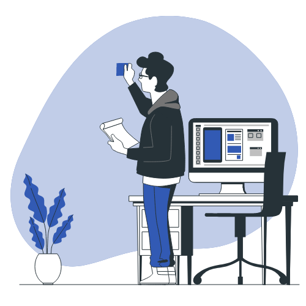

Apaixonado por tecnologia e inovação
Sou Igor Araújo, profissional da área de Tecnologia da Informação com experiência em suporte técnico e manutenção de equipamentos. Sou formado como Técnico em Informática e atualmente curso Análise e Desenvolvimento de Sistemas, buscando evoluir constantemente e ampliar meus conhecimentos na área de tecnologia.
Ao longo da minha trajetória adquiri experiência prática com manutenção de computadores e dispositivos móveis, realizando diagnóstico de problemas, instalação e configuração de sistemas, otimização de desempenho e suporte técnico aos usuários. Tenho facilidade em identificar falhas e encontrar soluções eficientes, sempre prezando pela qualidade do serviço e pela satisfação de quem utiliza a tecnologia no dia a dia.
Também possuo experiência com ensino de informática, auxiliando pessoas no aprendizado do uso do computador, internet e ferramentas do pacote Office. Essa experiência contribuiu para o desenvolvimento da minha comunicação, paciência e capacidade de explicar conceitos de forma clara e acessível.
Sou uma pessoa dedicada, curiosa e sempre interessada em aprender novas tecnologias. Acredito que a tecnologia tem um papel fundamental na vida das pessoas e das empresas, e meu objetivo é continuar evoluindo profissionalmente, desenvolvendo soluções e contribuindo para facilitar o uso da tecnologia no cotidiano.

Projeto desenvolvido como parte do meu portfólio, com foco em lógica de programação e organização de código. A aplicação foi construída utilizando uma estrutura modular, visando melhor manutenção, clareza no desenvolvimento e aplicação prática de conceitos de desenvolvimento web.
Ver ProjetoEm desenvolvimento.
Em desenvolvimento.
Criação e edição de vídeos para YouTube, redes sociais e apresentações.
Produção de textos, artigos, posts e descrições profissionais.
Tradução e revisão de textos em português e inglês.
Assistência virtual, organização e gerenciamento de tarefas.
Criação de lojas virtuais e catálogo de produtos.
Automação e scripts personalizados.
Manutenção de computadores, sistemas e suporte remoto.
Desenvolvimento de sites modernos e responsivos.
Vamos conversar?